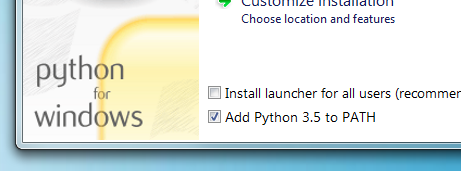

MkDocs Installation
A detailed guide.
Requirements
MkDocs requires a recent version of Python and the Python package manager, pip, to be installed on your system.
You can check if you already have these installed from the command line:
$ python --version
Python 3.8.2
$ pip --version
pip 20.0.2 from /usr/local/lib/python3.8/site-packages/pip (python 3.8)If you already have those packages installed, you may skip down to Installing MkDocs.
Installing Python
Install Python using your package manager of choice, or by downloading an installer appropriate for your system from python.org and running it.
Note
If you are installing Python on Windows, be sure to check the box to have Python added to your PATH if the installer offers such an option (it's normally off by default).

Installing pip
If you're using a recent version of Python, the Python package manager, pip, is most likely installed by default. However, you may need to upgrade pip to the lasted version:
pip install --upgrade pipIf you need to install pip for the first time, download get-pip.py. Then run the following command to install it:
python get-pip.pyInstalling MkDocs
Install the mkdocs package using pip:
pip install mkdocsYou should now have the mkdocs command installed on your system. Run mkdocs
--version to check that everything worked okay.
$ mkdocs --version
mkdocs, version 1.2.0 from /usr/local/lib/python3.8/site-packages/mkdocs (Python 3.8)Note
If you would like manpages installed for MkDocs, the click-man tool can generate and install them for you. Simply run the following two commands:
pip install click-man
click-man --target path/to/man/pages mkdocsSee the click-man documentation for an explanation of why manpages are not automatically generated and installed by pip.
Note
If you are using Windows, some of the above commands may not work out-of-the-box.
A quick solution may be to preface every Python command with python -m
like this:
python -m pip install mkdocs
python -m mkdocsFor a more permanent solution, you may need to edit your PATH environment
variable to include the Scripts directory of your Python installation.
Recent versions of Python include a script to do this for you. Navigate to
your Python installation directory (for example C:\Python38\), open the
Tools, then Scripts folder, and run the win_add2path.py file by double
clicking on it. Alternatively, you can download the script and run it
(python win_add2path.py).